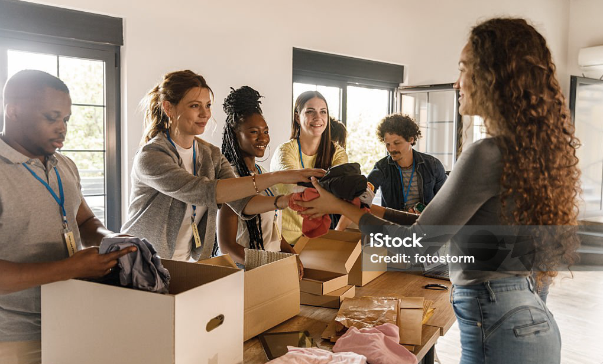
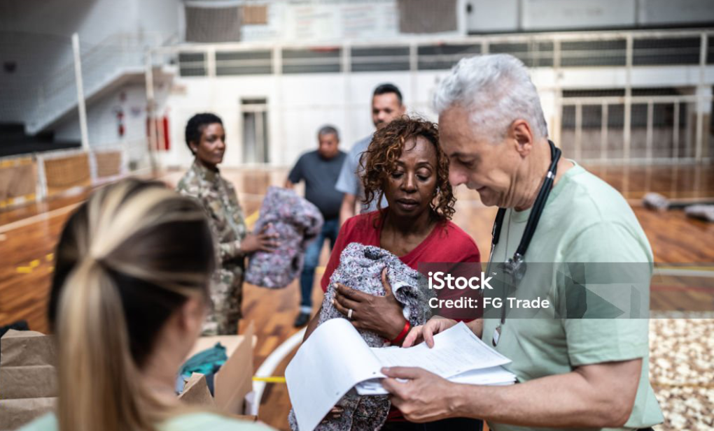

Schritt 1Spende registrieren und abgeben
Du entscheidest, wohin deine Spende gehen soll. Du bringst die Kleidung vorbei oder wir holen sie ab.
Wir sammeln deine Kleidung und bringen sie dahin, wo sie wirklich benötigt wird.
Jetzt spenden
Schritt 1Du entscheidest, wohin deine Spende gehen soll. Du bringst die Kleidung vorbei oder wir holen sie ab.
Mit unserem globalen Partnernetzwerk stimmen wir den direkten Transport in die Regionen ab.

Schritt 3Deine Kleidung erreicht Menschen in Krisenregionen, die auf humanitäre Unterstützung angewiesen sind.
Kleidung, die nicht mehr getragen wird, landet häufig im Müll oder verstaubt im Schrank. Intransparente Spendensammlungen führen zu Unsicherheit darüber, ob man überhaupt eine Wirkung erzielen kann. Das wollen wir ändern.
Wir sind ein unabhängiges, junges Team – lokal verankert und global vernetzt – und bringen Kleidung gezielt dorthin, wo sie am dringendsten gebraucht wird.
Was wir anders machen: Du entscheidest selbst, welche Region du unterstützt. Wir handeln schnell, flexibel und ohne bürokratische Umwege.
Damit jede Spende transparent ist und genau dort ankommt, wo sie wirklich hilft.
AID WEAR ist ein unabhängiger Verein mit Sitz in Lippstadt. Wir sammeln gespendete Kleidung und bringen sie gezielt dorthin, wo sie im Rahmen humanitärer Hilfe benötigt wird. Dabei verbinden wir unsere lokale Arbeit in Lippstadt mit einem globalen Partnernetzwerk. Unser Ziel ist es, Kleidung schnell, transparent und ohne unnötige bürokratische Umwege Menschen in aktuellen Krisengebieten zugänglich zu machen.
Bei der Registrierung wählst du die Art der Kleidung aus einer vorgegebenen Liste aus. Dadurch können wir die Spenden besser erfassen und den Transport gezielt koordinieren.
Wenn die ersten beiden Ziffern deiner Postleitzahl nicht mit denen der Geschäftsstelle übereinstimmen, kann das Sammelfahrzeug deine Spende nicht abholen. In diesem Fall kannst du deine Kleidung alternativ persönlich an der Geschäftsstelle abgeben.
Du kannst deine Kleiderspende entweder persönlich an unserer Geschäftsstelle abgeben oder unser Sammelfahrzeug zur Abholung anfordern. In beiden Fällen registrierst du zunächst deine Spende über das Formular.
Nach erfolgreicher Registrierung ist deine Spende erfasst. Bei einer persönlichen Übergabe kannst du die Kleidung an der Geschäftsstelle abgeben. Bei einer Abholung stimmen wir den genauen Termin telefonisch mit dir ab. Anschließend wird die Kleidung gezielt dorthin gebracht, wo sie benötigt wird.